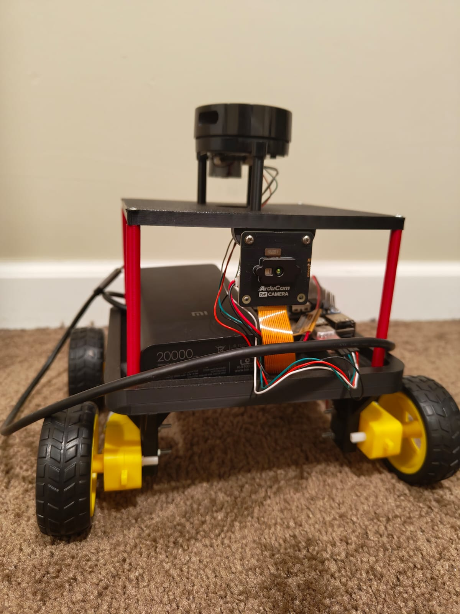
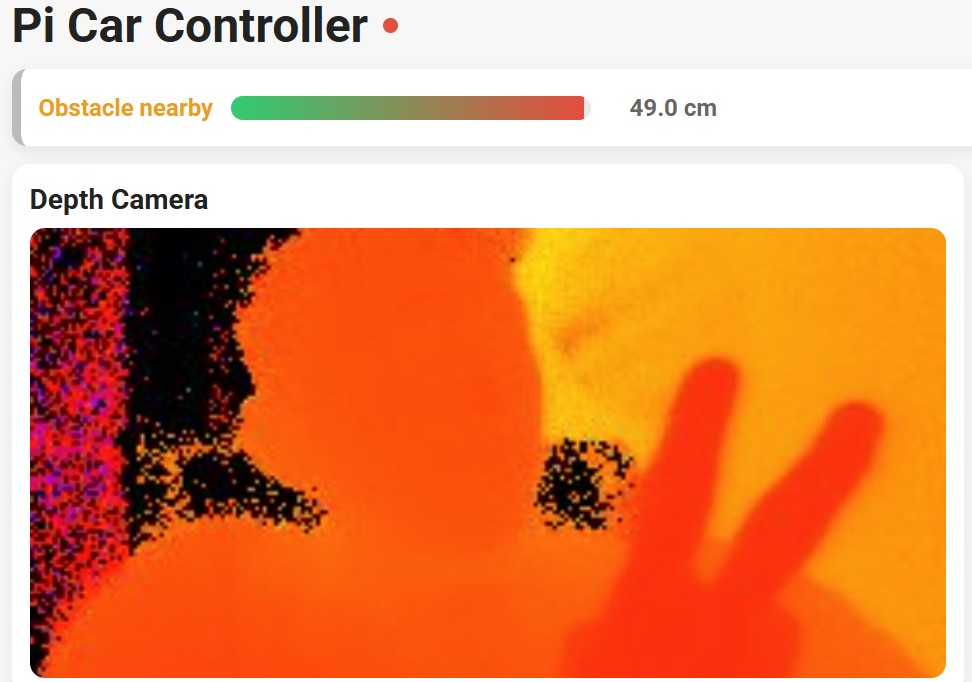
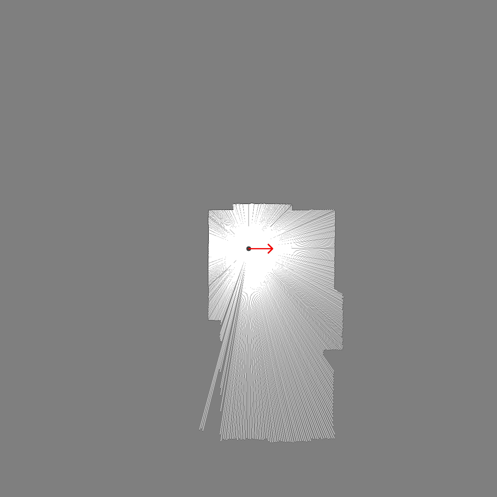

Real-time mapping with LiDAR, a depth-based safety layer, and a Flask + Socket.IO control page built from scratch.

The car navigates around a bottle barricade using the depth safety layer and the live control UI.
Computes a median distance inside a front-center ROI and uses hysteresis to avoid flicker. If the distance is unsafe, motors stop immediately.
On command, the car backs up, performs a capped left probe, and advances in short pulses while maintaining a controlled gap to the obstacle line.
Depth preview, an obstacle bar, and a naive LiDAR map stream provide real-time observability during testing and tuning.
| Part | Model | Notes |
|---|---|---|
| Compute | Raspberry Pi 5 | 4–8GB RAM |
| Motor Driver | Dual H-Bridge HAT | PWM ENA/ENB → GPIO12/13 |
| Motors | 4× DC | Encoders optional |
| Depth | Arducam ToF | Up to 4m |
| LiDAR | 2D LiDAR | Publishes /scan |
| Battery | LiPo Pack + Reg. | Current-capable |
| Power | Power Bank | Stable 5V to Pi |
| Prints | Chassis + Mounts | STL in repo |
/move (manual drive; forward is blocked when the guard is active), /maneuver_depth (left-hand bypass), /video_feed (depth MJPEG), /naive_map_feed (map MJPEG), plus lightweight debug endpoints.obstacle_update for low-latency UI feedback; if websockets are unavailable, the UI polls /debug_distance.

kunsh912@gmail.com
{kind=link}
{kind=link}